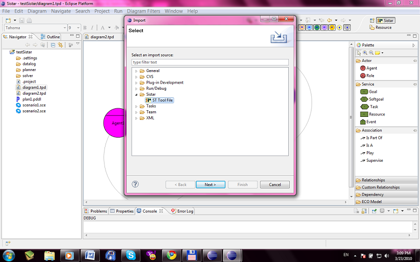
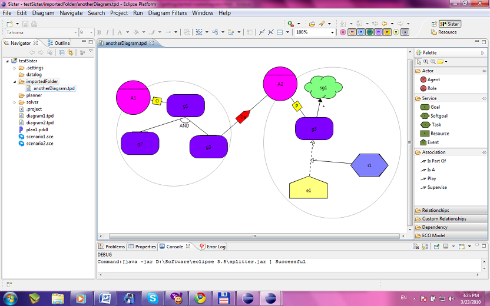

Import ST Tool File
- File -> Import -> Sistar(Folder) -> ST Tool
This action will import the ST Tool files in the workspace.

- The files will be imported in a folder with the same name. The models inside will be
imported as files under the folder.
